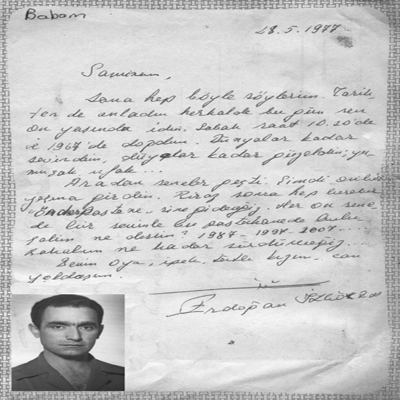

Seninle kırk yedi yıl önce yuva kurduk. Bugüne kadar çok güzel günlerimiz oldu, çok zor günlerimiz oldu. Hepsinin üstesinden beraberce geldik. Canım benim, seninle bu beraberliğimden hiç pişman olmadım, olmayacağım.
Gülten İzgören
Canım Babam,
Bu hitap her zaman kulağıma hoş gelmiştir: “Babam”. Üç kişi paylaşsak da sen benim canım babamsın! Kelimeler, cümleler seni anlatmaya, ifade etmeye yetmez. Değersiz kalır, anlamsız olur. Sevgi dolu yüreğinden mi bahsetsem, derya deniz maneviyatından mı, değişmez değerlerinden mi? Seni çok seviyorum, seviyoruz. Seni seven onlarca insan, şimdi senin için bir şeyler yazmaya çalışıyorlar. Ben hissediyorum ki hepsi de daha neler yazabilirim, nasıl güzel ifade edebilirim hissiyle kaleme kâğıda sarıldılar. Bazıları senin etrafındaki halkanın çok dışındalar. Ama hissettikleri, yaşadıkları ile sana çok yakınlar. Bizler şanslıyız. Seninle bir yaşadık, mutlu olduk, seninle yoğrulduk.
Babacığım, baban erken yaşta vefat ettiği için bize hep “İyi bir baba modeli olmak istedim, çabaladım” derdin. Çabana gerek yoktu, sen zaten iyisin. İyi bir baba, iyi bir eşsin. Akraba, dost, komşu, hemşeri, esnaf, öğrenci, hepsine de en değerli şeyi, “sevgi”yi verdin.
Baba hep beni sevdiğini zikrettin. Ne güzel, Allah’ın sevgili bir kuluymuşum. Senin gibi bir baba tarafından sevilmek ve senin gibi bir babaya sahip olmak... Allah uzun ömürler versin. Senden bize akan hep “doğruluk, dürüstlük pınarları” vardı. Bu pınarlar sayesinde biz de çevremize su damlası misali yardımcı olmaya çalışıyoruz.
Yaşadığımız acı, tatlı olaylarda hep aklımızdasın. Biz seninle varolduk, olacağız ve seni hep anacağız.
Bu arada yemek düşkünlüğünü de söylemeden geçmeyelim. 24 saat sevdiklerinle olmayı ve onları sofrada ağırlamayı kendine düstur edindin. Bu arada kapama, Demirci kebabı, keşkek, kavurma ve balık ziyafetlerini güzel anneciğimin elinden hep birlikte yedik.
“Çiçekler” babamın hayatının önemli bölümünü alır. Yıllarca anneme hep çiçek taşıdı. Bıkmadan usanmadan. Hepsinin ismini bilir. Bizleri de hep çiçeklendirdi. En sevdiği çiçek yasemindir. Bir de annem Gülten.
Seni Seviyorum Babam
Bengül İzgören
Artık İnce Belli Bardaktan İçeceğim Çayımı...
İnsanın bir kalemde babasını anlatması zor. Günlerce kurgula kurgula, kaleme dökeme... Hele bir de babanız edebiyat öğretmeni olunca iş daha da zorlaşıyor. Her kelime diken üstünde Erdoğan İzgören’e bakar “Beni beğenecek mi?” diye...
Babamın bize öğrettiği en önemli şey, bence, kitaplara olan sevgidir. Hayatımızın her anında, her tarafımız kitaplarla doluydu. Kitap okuma toplantıları yapardık. Bir yandan bizim başımızı okşar bir yandan da bize kitap okurdu. Lisede Divan edebiyatını sınıfta sadece ben severdim. Derinliğini babam öğretmişti Divan edebiyatının.
Alınan bütün kitaplar bir süre sonra topluca ciltlenmeye gönderilirdi. Kitaplar korunsun, bozulmasın diye.
Her şeyi töreniyle yaşar babam. Sevinci de, neşeyi de, üzüntüyü de...
İnsan evlat sahibi olunca daha iyi anlıyor anne ve babasını. Ben hiç çocuğuma töreniyle uçurtma yapmadım. Çocuğumu alıp onlarla uçurtma uçurmadım. Sık sık civardaki ormanlarda gezdirmedim çocuğumu. Piknik yaptırmadım ağaç altında. Çocuğum ağaca çıkmasını bilmiyor, ben babamın bana gösterdiği güveni göstermedim diye.
Sık sık içimden de olsa karşı çıkardım babama:
– Televizyon izledim deme kızım. Seyrettim de.
– Kuzen deme kızım, Teyze oğlu de.
– Türkçe konuş kızım, Türkçe.
Bunlar sürekli babamın ağzındaydı. Çayımı kupada içerdim. “Kızım bunlar yabancılardan geçme. İnce belli bardak bir tek Türklerde var. İnce belli bardaktan iç çayını” derdi hep.
Çok bağlıydı milletini millet yapan her şeye. Biz yabancı müzik dinlediğimiz zaman bize kızar ve “Kızım, bak, bizde ilk radyo kurulduğunda Amerika 5 bin tane plak hediye etmiş. Müziklerini dinletmek için. Bunları bu milletler boşuna yapmazlar” derdi sık sık.
Sofrada yemeği yemek istemediğimiz zaman “Bunu bulamayanlar var kızım. Hiç olmazsa tadına bak” derdi.
Böylesi pek çok cümle uçuşuyor kafamda babama ait. Şimdi öğrenmeye çalışıyorum bütün bunları çocuk gelişimi kitaplarından, kişisel gelişim kitaplarından veya milletimin kaybolmaya yüz tutmuş değerlerini haber veren gazetelerin satırlarından. Babamdan duyduğum cümleler uçuşuyor şu sıralar sık sık kafamda.
Sanem Sunlu
Canım Dedeme,
Benim hayat dolu, insan canlısı, güler yüzlü, “sevgi” dolu dedem... Belki de çok az insana nasip olmuştur böyle bir dedeye sahip olmak ve onunla büyümek.
Dedeme ait, bana onu hatırlatan öyle çok güzellikler var ki nereden başlasam bilemiyorum. Ben daha üç yaşındaydım, dedem kalp ameliyatı olmak için hastanede kalıyordu. Biz de annemle onu ziyarete gidiyorduk. Bana her gün naneli sakız verip gülümsüyordu, sanki hastaneye değil de gezmeye gidiyormuşuz gibi hissediyordum. Kütahya’da kalırken beraber orduevine gidip bana gazoz ve en sevdiğim çekmece çikolatadan alırdı. Beraber sohbet eder, gezerdik. Yaz tatillerinde İzmir’e geldiğimizde, her öğleden sonra öğle uykusuna yatmam şartıyla, kendimizce belirlediğimiz yedi parkımızdan birisine veya birkaçına giderdik. O civarda belirlediğimiz ve birden yediye kadar sevdiklerimizden başlayarak numaralandırdığımız parklara giderdik. Hava kararıncaya kadar ben doyasıya oynardım, dedem de beni izlerdi. İlk defa hayvanat bahçesine dedemle gitmiş ve canlı olarak gördüğüm hayvanlardan çok etkilenmiştim.
Bahçede çıkan en ufak bir çiçekten bile muhteşem keyif alırdı, saksılarında yetişen canlının tüm gelişimini aynı heyecanla takip ederdi ve eve gelen herkese gösterirdi. Yoldan geçen tanımadığı çocukları gider, severdi, onlar elini öpmek isterken onlardan önce davranarak ellerini öper, öperdi. Çocuklar elini kapmaya çalışmaktan yorulunca da kahkahayla güler ve başlarını okşar, elini öptürürdü. Herkese selam verir, mahalledeki herkesi tanır, herkesle ilgilenirdi.
Hâlâ da öyledir, diyalize gitmeden bir saat önce kapının önüne iner, kuaförle, pideciyle, kapıcıyla, koltukçuyla hâlleşir, muhabbet eder. Kimseyi birbirinden ayırt etmez, herkesin gönlüne bakar. Simitçi Ali Efendi vardır, yıllardır ondan simit alırız. Gelir, çayımızı içer, eyvallah der, gider. Dedemle yaşıt olmasına rağmen, sabahın yedi buçuğunda mahalledeki yerini alır ve aynı tebessümle simidini satar, ekmek parasını kazanır.
Dedem, başarılarımızla iftihar eder, bizi her yönden destekler. Hayatın sadece derslerden ibaret olmadığını, bir öğretmen olarak, “Cuma günleri ödev olmaz” sözünü söylemesinden ve bizi sürekli Türk Sanat Müziği dinlemeye, söylemeye ve bir enstrüman çalmaya teşvik etmesinden anlardık.
Et ve et yemeklerine bayılır, özellikle anneannemin elinden yapılan kuzu kapama, Demirci kebabı ve keşkek en sevdikleridir. Hatta şu hikâye anlatılır: İlk defa et yediğinde üç veya dört yaşındadır ve annesi Emine Ninemden daha fazlasını isteyip de “Et kalmadı, oğlum” cevabını alınca, dönüp, “Anne, ağabeyimi keselim” demiştir.
Akşam yatış, sabah kalkış ve yemek saatleri bellidir. Düzeni sever ve bunların dışına çıkmayı sevmez. Anneanneme “hatun” diye seslenir, ona çiçekler alır, iltifatlar eder; ona karşı sevgi ve saygısını her fırsatta dile getirir. Diyaliz sonrası artan yemek yasakları hariç anneannemin dediklerinin dışına pek çıkmaz.
Her gün görüşsek bile “Bir tanem, ben sizi çok özlüyorum” der. Torunlarıyla “tininay tininay tininanininay” melodileriyle dans eder. Küçükken beni çok ısırarak sevdiği için kızıyordum ona; ama bana hemen bir hikâye ya da masal anlatarak gönlümü aldığı için ses etmiyordum sanırım. Ortaokul ve lise çağlarında her ailede olan anne-baba-ergen sorunlarında beni karşısına alıp çok konuşmuştur. “Bak kızım, senin delikanlı çağın. Kanın deli akıyor, çok normal; ama haydi git bir özür dile annenlerden. Haydi, bak onlar senin annen, baban ve iyiliğini istiyorlar.” Ben istemeye istemeye özür dilemeye giderdim annemden ya da babamdan. Bizi sarılırken görünce dedemin hemen gözleri dolardı. Şimdi ne yapmak istediğini çok daha iyi anlıyorum.
Hayatta önemli olan ve hayatı değerli kılan güzelliklerin sevgi, dostluk ve muhabbet olduğunu bize her defasında hatırlattığın ve öğrettiğin için çok teşekkürler dedeciğim. Seni çok seviyorum.
Torunun Nazlı Uluer
Dedelerin bir tanesi,
Dedeciğim sen bir insanın sahip olabileceği en sabırlı, en akıllı, en disiplinli, ama her şeyin yanında çok fazla sevgi dolu bir insansın. Sadece dede olarak değil, bir insan olarak örnek alınacak birisin.
Çocukluğumun büyük bir bölümü seninle ve anneannemle geçti. Belki de bu kadar güler yüzlü ve çevremdekilerin deyimiyle sıcakkanlı olmamda senin de çok büyük katkıların var. Küçükken istemeyerek gittiğim anaokulunda arkadaşlarıma anneannemle konuşmalarınızı taklit ederdim, epeyce gülerlerdi. Beni omzuna alıp gezmeye götürmeni hayatım boyunca hiç unutmayacağım. Yazın dumancı ağabeyi de hiç sevmezdim, beni her Allah’ın günü altı ile yedi arası sırf ben korkmayayım diye sahile götürürdün. Çocukluğum seninle ilgili birçok hatırayla dolu.
Her geçen günün değerinin daha da çok farkına varıyorum. Dedeciğim biliyor musun, bayramlar da seninle güzel. Her bayramda sizin eve toplanıp yaptığımız bayramlaşmayı hiçbir şeye değişmem herhâlde. Bazen düşünüyorum da hayatta her şeye sahibim; ama bazen o kadar boş şeylere üzülüyorum. Sen diyaliz hastasısın ve yüzündeki o gülücük hiçbir zaman eksik olmuyor, keşke ben de her zaman senin gibi olabilsem. Seninle konuşmak çok güzel biliyor musun? Beni dinliyor ve o kadar güzel cevaplar veriyorsun ki insanın içi rahatlıyor. Derslerimi takdir etmen, her davranışımın arkasında durman, anneanneme dönüp “Bu farklı bir şey hanım” deyip beni göstermen ve ardından kocaman sevgi dolu bir öpücük kondurman inan ki dünyanın en pahalı hediyesine değişilmeyecek bir şey.
Beş, altı yaşında dinlediğim çoğu masalı sen yazmıştın. Hiçbir yerde duyulmayan masallar dinledim ben senden. Seninle yaşadığım her anı, her saniyeyi tekrar yaşamak için nelerimi vermezdim. Seni tanıyan her insan senden bahsettikçe gözlerinin içi gülüyor. Yaşamın boyunca yaptığın iyilikler, insanlara verdiğin mutluluk o insanların gözünden belli oluyor ve o zaman gururla söylüyorum, “Erdoğan İzgören benim dedem” diye ve her zaman da söyleyeceğim. Seni çok fazla seviyorum bir tanecik dedem.
Naz Uluer
Yıl 1971... İstanbul Yüksek Öğrenim Okulu’nda son sınıfa geçtim ve yaz tatili olduğu için doğup büyüdüğüm memleketim Menemen’deyim.
Kazamız eşrafından Hacı Suat Ağabey, 1984’te ebediyete uğurladığımız Akgün Ağabey ve Ziraat Yüksek Mühendisi Yahya Ağabey’in el ele vererek maddi, manevî büyük fedakârlıklarla açılışını gerçekleştirdikleri Millî Kültür Derneği’nde toplandık. Derneğimiz, hükûmet konağı yakınındaki bir binanın zemin katında, en fazla yirmi iki sandalye sığabilecek kadar küçük ve penceresiz; fakat mensuplarının fikriyatı ve hissiyatıyla bütün Türk ellerini ihata edecek ölçüde engin bir mekân.
Hepimiz Yahya Ağabey’in konuşmacı olarak getireceği misafiri bekliyoruz.
Az sonra kapı açıldı ve içeri Yahya Ağabey ile birlikte otuz beş yaşında, takım elbiseli, ufak tefek bir zat girdi: Maltepe Askerî Lisesi Edebiyat Öğretmeni Yüzbaşı Erdoğan İzgören. Selamlaşma, tanışma faslından sonra yavaş yavaş sesler kesildi ve bütün gözler misafirimize çevrildi. Yüzbaşı Erdoğan Bey, konuşmasına aramızda bulunmaktan duyduğu memnuniyeti belirterek başladı. Tavırları rahat, sesi pürüzsüzdü. Sanki sınıftaki öğrencilerine bir konuyu anlatıyordu. Yaklaşık iki saat boyunca irticalen, milletçe ne idiğimiz, ne olduğumuz ve ne olmamız gerektiğini, bağırıp çağırmadan, kimseleri suçlamadan, tehditler savurmadan mükemmel bir üslûpla ifade etti. Fikirler çok doğru, natıka fevkaladeydi. Hepimiz hayran olmuştuk.
Bu dernek toplantısından bir ay kadar sonra, Yahya Ağabey’le birlikte, Yüzbaşı Erdoğan Bey’i evinde ziyarete gittik. Dernek yönetimi beni “Malazgirt Zaferi’nin dokuz yüzüncü yıl dönümü” münasebetiyle “Tarih boyunca Türklerde devlet anlayışı” konulu bir konuşma hazırlamakla görevlendirmişti. Mevzu çok geniş, elimdeki kaynaklar ise yetersizdi. Bunaldığımı gören Yahya Ağabey, Yüzbaşı Erdoğan Bey’in bu hususta bana yardımcı olabileceğini söylediği için gelmiştik.
Yahya Ağabey, işi olduğundan fazla kalamayıp ayrıldı. Erdoğan Bey önce konuşma metninin planını, daha sonra işlemem gereken fikirleri maddeler hâlinde yazdırdı. Ayrıca hitabet sanatının bazı püf noktaları hakkında ikaz ve tavsiyelerde bulundu.
İşim tamam olmuş, alacağımı almıştım. Teşekkür edip müsaade istedim. Hafifçe kaşlarını çatıp “Olmaz!” dedi. “Bu saatte gidilmez, akşam oldu. Allah ne verdiyse yeriz, sonra gidersin.” İtiraz edemeyip kaldım. Eşi Gülten Hanım’ın hazırlayıp sunduğu yemekleri, çocukları Bengül, Şerif ve Sanem’le birlikte ben de aileden biriymişim gibi, masada yerimi alıp afiyetle yedim. Aslında mahcup ve çekingenimdir; ama Erdoğan Bey ile eşinin misafirperverliği, dünya tatlısı üç afacanın ilk defa gördükleri bir yabancı olan şahsıma gösterdikleri ilgi ve yakınlık beni bir hayli rahatlatmıştı.
Dernek toplantısında Erdoğan Bey’in bilgisine, fikirlerine ve natıkasına hayran olmuştum. Bu defa da aile reisi olarak otoriter ve müşfik yapısıyla oluşturduğu, evin her köşesine sinmiş sıcak ve samimi atmosfere; daha açık ve kısa bir ifade ile “insanlığına” meftun oldum.
Yukarıdaki ziyaretten sonra hadiseler öyle hızlı gelişti ki altı aya varmadan Yüzbaşı Erdoğan İzgören’le, daha doğrusu Erdoğan Ağabey’le “bacanak” olmayı Rabbim bana nasip etti. Hatta mütevazı nişan törenimiz Erdoğan Ağabey’in Çiğli Subay Lojmanları’ndaki evinde gerçekleşti.
Hikâye olarak anlatırlar: Eskiden iki bacanak değirmene buğday öğütmeye gitmişler.
– Önce sen öğüt!
– Hayır, önce sen öğüt! derken akşam olmuş, buğdaylarını öğütemeden köye geri dönmüşler. Ben bunu ilk dinlediğimde bacanakların birbirlerine olan sevgi ve saygılarından ilk öğütme sırasını diğerine bıraktığını sanmıştım. Meğer ilk öğütülen buğdayın unu taşlı olurmuş da ondan öyle davranmışlar.
Biz, yani ben ve Erdoğan Ağabey hiç değirmene gidip buğday öğütmedik; fakat aramızdaki ilişki iki bacanaktan ziyade “ağabey-kardeş” ilişkisi olarak ve her geçen gün ziyadeleşerek devam etti. Onu daima öz ağabeyim olarak gördüm, meslek ve aile hayatımda, insani ilişkilerde hep onu örnek aldım. Onun da benim için gönlünde bir kardeş sevgisi yaşattığından eminim. Böylesine muhabbet, hürmet, vefa ve sadakat temelleri üzerine oturmuş ve otuz beş yılı geride bırakmış bir dostluk basit bir şey olmasa gerek.
Erdoğan Ağabey şimdilerde hasta. Kalp, tansiyon ve göz rahatsızlıklarının yanında haftada üç kez diyalize giriyor. Ama o, bu hastalıklarla örnek bir kişilik sergilemeye devam ediyor. Her sıkıntıya gösterdiği fevkalade sabrı, hayata bağlılığı ve pencereye konan bir kuş, saksıda açan bir çiçek, karşılaştığı aşina bir sima, torunu Nazlı’nın pişirdiği bir fincan köpüklü kahve karşısında duyduğu mutluluk anlatılır gibi değil.
Erdoğan Ağabey, seni çok seviyoruz.
Cemil Doğan
Eniştem,
Lügat anlamı kız kardeş veya kadın akrabalardan birinin kocası olan “enişte” kelimesi, benim için en büyük ablam Gülten’in nişanlanmasıyla yepyeni bir mana ifade etmeye başladı. Halalarımın, teyzelerimin eşleri de eniştemdi; ama onlar babam yaşlarındaydılar. Sekiz yaşındayken ailemize damat olan eniştem ise ben ve kardeşlerim için bir ağabey, dayı, amca da olmuştu. Çünkü babamın erkek kardeşi yoktu, annemin ağabeyi Mehmet Dayı askerdeyken apandisit ameliyatında masada kalmıştı. Biz, beş kız kardeştik.
Edebiyat tahsil etmenin yanında bu sahada kendisini yetiştiren, yalnız bilgi sahibi olmakla kalmayıp edebiyatın inceliklerini de yaşayan eniştem, ilkokul öğrencisi olan bana, ablama iletmem için maniler, şiirler okurdu. Bizimle çocuk olduğu kadar, büyüklerle en ciddi konuları konuşurken de etrafındakilere kendisini dinletirdi.
Milletimizin bütün iyi değerlerini yaşayan, eski ve yeni yazıyı okuyan bir annenin fevkalade esprili ifadesi, çok güçlü hafızasıyla birleşince edebiyata meraklı olan ve eğitimini alan enişteme mutlaka tesir etmişti. Ve o bu güzel hasletleri değil yaşamaya çalışmak, varlığıyla bütünleştirmişti.
Bu güzel meziyetler babamın ani ölümüyle öylesine ortaya çıkmıştı ki o yıllara dönüp baktığımda acımızı paylaşan, bizimle ağlayan, Şubat tatilini dinlenerek değil, mağazada benimle beraber adeta nöbet tutarak geçiren, birkaç ay sonra doğan oğluna babasının adı “Ahmet”in yanına “Şerif” adını koyarak ruh asaletini bu davranışıyla da gösteren, evinin kapısı herkese olduğu gibi, bizlere de daima açık olan, evine gelenleri Tanrı misafiri kabul edip kendi evlerindeymiş gibi rahat ettiren biri. Görevi gereği hangi şehre gittiyseler biz de gider, epeyce kalırdık.
Annem ve eniştemin annesi Emine Teyzem zannediyorum kendilerini hiç bir zaman dünür olarak görmediler, hissetmediler. Birbirlerine “Fatma Hanım”, “abla” diye hitap edişlerindeki sevgi, saygı ve muhabbetin güzelliğini görüp yaşamayanlar bilemezler. İki dünürün sohbetleri çoğu zaman eniştemin iştirakiyle kahkaha tufanına dönüşürdü.
Kitap almayı bir tiryakilik hâline getirmiş olan eniştem, o kitabı okumadan kitaplığındaki yerine koymazdı. Şimdi düşünüyorum da askerî lisede edebiyat öğretmenliği, kılı kırk yararcasına okunan edebiyat yazıları, kompozisyonlar, ablama iyi bir eş, üç evladına iyi bir baba, annesine hayırlı bir evlat, biz baldızlarına enişte-ağabey-amca-dayı-baba olabilmek; ağabeyinin yaşamayan sekiz çocuğundan sonra o günün imkanlarıyla dokuzuncu çocuğun yaşamasına vesile olmak, alışveriş yaptığı her kişiyle ahbap olabilmek... Zannederim bunları yazmak sayfaları doldurur. Ve yine de tam olarak anlatmış olamam.
Allah’tan dileğim, hayatı hem her yönden ciddiye alan, ama bu ciddiye alışları bile espriye boğabilen enişteme hayırlı uzun ömürler vermesi. Çünkü onun sevgisine, muhabbetine ablam ve evlatları kadar, çevresindeki uzak-yakın bütün tanıdıklarının ihtiyacı var. Her şey için sonsuz teşekkürler enişteciğim.
Kardeşin Zehra Doğan
Emekli öğretmen Albay Erdoğan İzgören, can dostum, kardeşim. Kardeşim diyorum, candan dostluğumuzun sınırsızlığı kardeşlerimden daha önceliklidir.
Tanışıklığımız 1957 yılına, Ankara Üniversitesi DTCF edebiyat dalının bir sınıfında, aynı sırayı paylaştığımız günlere dayanıyor. Manisa’nın Demirci’sinde doğmuş, çileli yollardan geçip Ankara’ya okumaya gelmiş. Hava Kuvvetleri’ne bağlı askerî öğrenci olmuş. Bugün için bile küçümsenemeyecek bir başarıdır.
Can dostluğumuz böyle başladı. Mütevazı yüreği sevgi dolu, iyilikten başka bir şey düşünmeyen, yardımsever bir yürek. Bana hediye ettiği Osmanlıca sözlüğü hâlâ saklarım, ondan yararlanırım. Akşamları fakülteden çıkışımızla birlikte Cebeci’deki askerî öğrenci yurdunun yolunu tutardık. Akşam yemeğinden sonra etüt salonunda buluşurduk. Kucağımızdaki sözlük ve kitapları masaya yığar, ertesi günün derslerini hazırlamaya koyulurduk.
Konuya Fuzûlî’nin bir kasidesi veya Bâki’nin gazellerindeki Osmanlıca sözcükleri yarı yarıya paylaşarak başlardık. Türkçe karşılıklarını sözlüğümüzden bulur, şiiri bugünkü dile çevirir, yorumlardık. Yıllar süren arkadaşlığımız böyle sürüp giderken arkadaşımın bir sömestir tatili sonrası nişanlandığını öğrendim.
Gözlerinde o gün gördüğüm o farklı ışıltı hep parladı. O günden sonra da arkadaşımın başından kavak yelleri eksik olmadı. Sevdanın ateşi sardı yüreğini, gözleri dalıp gider oldu.
Bir akşam etüt salonuna geldiğimde Erdoğanımı çalıştığımız masanın başında görmedim. Cama başını dayamış, uzaklara dalıp gitmiş, kendinden bihaber buldum. Yanına gidip “Ne yapıyorsun burada Erdoğanım” dedim. O bana Alim, ben ona Erdoğanım derdim. “Yok bir şey” dedi. “Var elbet, hayrola, anlat hele” deyince “İki haftadır Demirci’den haber yok” dedi. “Kimden haber bekliyordun? Hayırdır” dedim. “Benim nişanlıdan, Gülten’den” deyip derin bir iç çekti. Dünya iyisi Gülten Yengemin adını da böyle öğrenmiş oldum.
Ders çalışmayı unutup, kantine doğru yürümeye başladık. Masaya oturduk, ne içelim derken Erdoğanım, “Birer kahve içelim” dedi. Orta şekerli kahveleri içtik. Kardeşim fincanı ters çevirip fala yatırdı. Bir süre sonra da fincanı kaldırıp “Hadi, bi falıma baksana” dedi.
Asla batıl itikadı olmayan Erdoğanım benden fala bakmamı istiyordu. “Ben fala bakmam, bilmem!” dediysem de dinletemedim. Erdoğanımı da kıramam, aldım fincanı elime, anlar gibi, uzun uzun kara çizgilere baktım. “İçin kararmış, sıkıntılısın, uzaklardan bir yerden haber de bekliyorsun” dedim. “Mutat bir gün mü desem, iki gün mü desem... Haber alacaksın” diye ekledim. Sonra da falcıların alışılmış laflarından sıraladım üçer beşer.
Ne bilirdim ki yengemin mektubunun geleceğini. Mektubu okumuş, sevinmiş tabii. Okulun koridorunda karşılaştık. Gözleri ışıl ışıl parlıyor, yüzü gülüyor; “Alim falın çıktı, iki gün dedin, tam ikinci gün mektubu aldım. Gerçekten de iyi fal bakmışsın, sen anlıyorsun” demez mi.
O günden sonra kantinde fincanı eline alan bana fal baktırmaya geldi. Erdoğanımın sayesinde fakültenin falcısı hâline geldim. Tesadüf de bu ya, kör talih, kimin falına baktıysam, atsam da tutsam da az çok dediklerim çıkarmış. Gün olmazdı ki kantinde dört beş fincan masama konmasın. Hele ki kız arkadaşlarımız, hele ki onlar...
Fala inanma, falsız kalma diye yıllarımız geçti duygu yüklü Erdoğanımla.
Gün geldi, mezun olduk, ayrı illere atandık. Sonra hiç ayrılmamak üzere aynı ilde görev aldık, birlikte çalıştık. Ancak orada da kahve falcılığımı gene başlattı. Baktım baş edemiyorum, “Arkadaş” dedim, “İki buçuğu verenin falına bakarım”.
Bugün dostluğumuzun ellinci yılındayız. Ne zaman ziyaretlerine gitsek “Hanım! Getir kahvelerimizi” der ve bana dönüp “Fala bakarız değil mi Alim?” diyerek muzip muzip gülümser. “Hâlâ mı Erdoğanım? Falda söylediğim yalanların boyu dünyayı üç defa dolanır” dediğimde de basar kahkahayı, ömrü oldukça gülesi Erdoğanım...
Allah’tan sağlık ve mutluluk dilerim canım kardeşime, muhterem yengeme...
Ali Nacar
Tanıdığım ve sevdiğim Erdoğan Ağabey,
Erdoğan Ağabey ile tanışmamız 1974 yılında Bursa’da ben Renault otomobil fabrikasında mühendis olarak çalışırken oldu. Sâmiha Anne gönderdiği küçük bir pusulada “...Erdoğan ağabeyinizle takviye oldunuz” diyordu. Erdoğan Ağabey o zaman binbaşı idi. Çekirge’de oturuyorlardı. Yaz aylarında, cumartesi günleri rahmetli Ziya Uyar ve Mustafa Uçak Ağabeyler, Erdoğan Ağabey, ben, o sıralarda ilkokulda okuyan Şerif’i yanımıza alır, hanımları ve hep ders çalışırken gördüğüm küçük Sanem’i evde Gülten Abla’yla bırakır civarda dolaşmaya çıkardık. Erdoğan Ağabey daha önce tek başına gezip gördüğü yerlere bizi götürür, “Bakın bu çeşmenin suyu çok tatlı, bu yerin havası çok hoş” diye bizi bir rehber gibi gezdirirdi. Çekirge’ye üç, beş kilometre mesafedeki Dobruca Köyü’ne de gitmiştik. Erdoğan Ağabey daha önce gittiği köyde Dobrucalı Mehmet pehlivanın kispetini gördüğünü, ağırlığı ve büyüklüğü karşısında şaşırdığını söyledi. Biz gittiğimizde kispetin durduğu köy odası kapalı olduğundan görmek nasip olmadı.
Daha sonra Uludağ’ın eteklerine tırmandık. Erdoğan Ağabey’in daha önceden gördüğü bir kaynaktan abdest aldık ve gene onun bildiği güzel bir yeşillikte namaz kılıp yola devam ettik. Erdoğan Ağabey bizi bahçelerin bulunduğu bir yere götürdü. Koyu, gölgelik bir bahçeye tesadüfen girdik. Bahçe sahibi orta yaşlı birisi idi. Selamımızı alıp bizi bir ağacın gölgesine oturttu. Biraz sonra, simsiyah bir köpek yanımıza gelip her birimizi teker teker koklamaya başladı. Bahçenin sahibi “Bu köpek nasıl oldu da size saldırmadı. Hâlbuki kimseyi bahçeye sokmazdı” dedi. Geceleri bahçeleri talan eden yaban domuzlarını kovması için hususi olarak eğitilmiş olduğunu söyledi.
Dibinde oturduğumuz ağaçtan olgunlaşan meyveler yere düşüyordu. Bahçenin sahibi yerden aldığı çürümeye başlamış meyvelerden bize ikram etti. İçimden, niçin dalından, tazelerden koparıp vermiyor da yerdeki çürükleri ikram ediyor, diye düşünüp midemin rahatsız olduğunu söyleyerek yemek istemedim. Adam sanki bu düşüncemi anlamış gibi “Bunun çürüğü yenir tazesi tatsızdır” dedi. Ben nedir bu meyve diye sorudum. Üvez deyince tadını merak ettim. Çünkü Sâmiha Anne çocukluğunda Çamlıca’daki yazlık komşularının bahçesinde bir ağacın meyvelerinin dibine dökülüp çürüdüğünü gördükçe üzüldüğünü, fakat aldığı terbiye gereği bu meyveden bir tane dahi yemediğini ve çok daha sonraları bu meyvenin üvez olduğunu yazıyordu. Pazarda satılmayan bu meyveyi çok merak etmiştim. İşte Erdoğan Ağabey sayesinde bu esrarlı meyvenin ağacını görmek, dibinde oturmak, meyvesinin hem ham hem de olgununun tadına bakmak nasip oldu.
Erdoğan Ağabey çevresiyle ve insanlarla çok ilgili idi. Onun için hep değişik kişiler tanır, onlarla konuşur ve tespitlerini bize bir roman tatlılığında anlatırdı. Hatırımda kalan bir tanesini burada yazmak isterim: Bursa Kız Lisesi ikinci sınıfında okuyan büyük kızı Bengül rahatsız olduğu için, kızının notlarını öğrenmek üzere Çekirge’den şehir otobüsüne binen Erdoğan Ağabey, biletçi ile tartışan bir köylü gence yardım eder. Genç, kasabaya bir bilet istemektedir. Biletçi Bursa’da kasaba diye bir durak olmadığını söyleyerek adama nereye gideceğini sormaktadır. Erdoğan Ağabey biletçiye, gence bir Heykel bileti vermesini, gence de bileti aldıktan sonra gelip yanına oturmasını söyler. Genç yanına gelince “Bak delikanlı kasaba küçük yerlere denir. Bursa gibi büyük yerlere şehir, vilayet, il denir” diye açıklar. Genç, “Ben ne bilem be ya, bizim orada kasaba derler” karşılığını verince Erdoğan Ağabey, “Sen nerelisin?” diye sorar. Genç, “Ben Romanyalıyım, Müslüman Türküm, boksörüm” diye cevap verir. Meğer bu genç o sıralarda Bursa’da yapılmakta olan Avrupa Boks Şampiyonası için gelmiş olan Romen takımının boksörlerinden hafif sıklet boksörüymüş. Erdoğan Ağabey, o gün izinli olan ve Bursa’yı gezmek isteyen boksörü yanına alır. Mektepte işini gördükten sonra, onu, tanıdığı esnaflardan rahmetli Sait Kanalıcı’nın ağabeyi Hüseyin Kanalıcı’nın Kapalıçarşı yakınındaki dükkânına götürmüş. Kapalıçarşı esnafı boksörün Türk ve Romanyalı olduğunu öğrenince ona hediyeler vermişler. Günlerden cuma imiş. Birlikte Ulu Cami’ye gitmişler. Namaza girenleri görünce boksör, “Bunların hepsi turist mi?” diye sormuş. Erdoğan Ağabey camiye girenlerin Cuma namazı kılmaya gelen Müslümanlar olduğunu söylemiş ve birlikte Cuma namazı kılmalarını teklif etmiş. Adamcağız namazla ilgili hiçbir şey bilmediğini söyleyince Erdoğan Ağabey, “Bana bakarak benim yaptıklarımı sen de yaparsın” demiş. Tabii bu arada, her zaman olduğu gibi, bazı kişilerin genç boksörün hatalarını düzeltmeye kalkışmalarını da Erdoğan Ağabey, o kendine has ifâdesiyle savuşturmuş ve camide uygun bir yerde Cuma namazını kılmışlar. Erdoğan Ağabey, dua ederken boksör gencin gözlerinden yaşlar aktığını görmüş. Namazdan sonra genç adam, “Dedem hep Kur’an-ı Kerim derdi. Nedir o? Bana onu gösterir misin?” demiş. Erdoğan Ağabey ona Kur’an’ı anlatmış, bir de Kur’an hediye etmiş. Onun zengin bir Türk evi görmesini istediğinden Hüseyin Kanalıcı’nın evine çay içmeye gitmişler. Onlara çayın yanında mükellef bir ikindi kahvaltısı ikram edilmiş. Erdoğan Ağabey, Romanya’da zeytinin çok sevildiğini ve sadece Komünist Partisi’nin ziyafetlerinde bulunan bir yiyecek olduğunu bildiğinden ev sahiplerinden zeytin de ikram edilmesini rica etmiş. Boksör elimle yiyebilir miyim? diye müsaade aldıktan sonra, kaptaki bütün zeytinleri -Erdoğan Ağabey’in ifadesiyle- leblebi yer gibi yemiş.
Romanya’daki Renault fabrikasında boyacı olarak çalışan boksör yeni doğmuş oğlunun adını Erşen koymayı istediğini, fakat şimdi Erdoğan koyacağını söylemiş. Altı ay sonra Amerika Birleşik Devletleri’nde yapılacak dünya şampiyonasından önce çocuğunu görmesinin mümkün olmayacağını, hazırlık çalışmaları dolayısıyla, şampiyona sonuna kadar eve gidemeyeceğini belirtmiş. Kendisinin bir fabrikada araba boyacısı olmasına rağmen, bokstaki şampiyonlukları sebebiyle, maaşının fabrika müdüründen daha fazla olduğunu söylemiş. Daha sonra ev sahibinin lüks Amerikan arabasıyla boksörü ve verilen hediyeleri oteline bırakmışlar. O da Erdoğan Ağabey’e ertesi gün bizim boksörle yapacağı maç için davetiye vermiş, ısrarla maça gelmesini rica etmiş.
Erdoğan Ağabey ertesi gün Şerif ile maça gidip en önde maçı seyretmiş. Romen boksör bizimkinden daha teknik ve daha güçlü dövüşüyormuş. Daha sonra bizim boksörün bir yumruğu ile kroke durumuna düşmüş ve hakem ona kadar sayarak maçı bitirmiş. Bizim boksör sevinç gösterileri yaparken Müslüman-Romen-Türk boksör, eldiveni ile burnunu siler gibi yaparak, kimseye göstermeden ön sırada oturan Erdoğan Ağabey’e göz kırpmış. O şampiyonada Türk boksörler büyük başarı elde etmişlerdi. Erdoğan Ağabey, öğretmen olduğu Işıklar Askerî Lisesi’nin beden eğitimi öğretmenine boks karşılaşmalarının neticeleri hakkında fikrini sormuş. O da “Bunlardan hakkıyla kazanan biri, birincilik karşılaşmasında Romen hafif sıklet boksörünü mağlup eden boksörümüzle -bir başka sıklette karşılaşmayı kazanan boksörümüz hariç- diğerleri hakemlerin lehimize verdiği kararlarla kazandılar” demiş. Karşılaşmayı Erdoğan Ağabey’in aldığını o da anlayamamış.
Erdoğan Ağabey daha sonra Bursa’dan tayin olup gitti ve tekrar geldi. Artık albaydı. Fakat ben de Bursa’dan Gemlik’e, başka bir işe geçmiştim ve görüşmelerimiz biraz daha seyrek oluyordu. Bu sıralarda bir kitap yazmıştı ve bana müsveddelerini okumam için vermişti. Ancak ben okuyamamıştım.
Daha sonra Erdoğan Ağabey emekli olup İzmir’e yerleşti. Bir tatil dönüşü, Erdoğan Ağabey’in adresini ararken, bir kavşakta genç bir kız bizim arabaya çarptı. O gece onlarda kaldık ve ertesi gün Erdoğan Ağabey’in tanıdığı bir kaportacıya gidip arabayı bıraktık. Arabanın tamiri için verilen saati beklerken, Erdoğan Ağabey, beni İzmir’in en bozulmamış, saklı kalmış köşelerinde birbirlerini kızdırmakla, şakalaşmakla oyalanan yaşlı esnafların bulunduğu çarşılara ve Demircili hemşerilerinin olduğu kahvelere götürdü. Orada rastladığımız huylu birisine takıldı. Kızdırmaya çalıştı. Adam benim yanımda pek küfür edemiyordu ve sadece “yapma, yapma” diyerek Erdoğan Ağabey’in sırtını kaşımasını görmemeye çalışıyordu. Meğer zavallının karşısındakinin yaptığı hareketleri tekrar etme hastalığı varmış.
Bir gün vakıfta dizgi yapan kızlardan birisinin elinde bir kitap gördüm. Çok sevdiğini, onun deyişi ile çok acıklı olduğunu söyledi. Kitaba baktım, ismi Kopuş ve yazarı Erdoğan İzgören idi. Hemen kitabı alarak bir solukta okudum. Kitabın konusu benim için yabancı değildi. Çünkü kitap küçük yaşta babasını kaybeden, kaymakam olan dayısının yanında büyüyen ve okuyan Erdoğan Ağabey’in hayat hikâyesinin romanlaşmış hâli idi. Konuşmalarımızda yeri geldikçe çok kısa bahseder, hiçbir zaman şikâyet etmez ve o sıkıntıları sabırla geçirmiş olmakla da övünmezdi. Kalp ameliyatından sonraki rahatsızlığından sonra bana “Hafızamdaki binlerce masal, hikâye ve şiir uçup gitti” diye üzüntüsünü söylemişti. Hep hareket hâlinde olan, güzel şeyler söyleyen ve güzel konuşan Erdoğan Ağabey, yüzünde yaşadığı zorlu hayatın, kederinin izleriyle profilden Casablanca filminin unutulmaz aktörü Humphrey Bogart’a çok benzerdi. Sigarasını onun gibi karizmatik şekilde içerdi. Allah’tan kendisine daha nice yıllar dilerim.
İdris Alhanlıoğlu
İstanbul
17 Haziran 2006
Muhterem Erdoğan Ağabey’e,
Zerafet timsali torununuz Nazlı kardeşimin “Sevgili dedem hakkında bir kitap hazırlıyoruz, anılan çalışmaya sizin de tespit ve düşüncelerinizle dâhil olmanızı arzuluyoruz” hitabıyla karşılaştığım zaman ciddi olarak heyecanlandım. Öncelikle, “Ben böyle bir iltifata layık mıyım?” diye kendimi hesaba çektim.
Sonra, böyle bir eser hazırlama kararının hangi amaçlara yönelik olabileceğini anlamaya çalıştım.
Konuyla ilgili müteşebbis heyet sizi daha yakından mı tanımak istiyordu? Bizzat yaşadıkları güzellikleri ebediyete taşıma suretiyle onların prensipler hâline gelmesini mi arzuluyordu? Derununuzda bulunma nasiplisi ağabey ve amcalarının zamanı geriye işleten beyanlarını alıp -adeta onlara ortak olarak- şahsınızla olan beraberliği, mana yoluyla da olsa uzatmak mı istiyorlardı?
Yoksa, doğrudan bana “Erdoğan Ağabey demek kolay. Şimdi söyle bakalım, beraberliği ile iftihar ettiğini her hâlükârda dile getirdiğini bildiğimiz Erdoğan Ağabeyi’nden otuz altı yılı aşkın zaman diliminde ne aldın?” sorusu mu soruluyordu.
Maksat; belki o, belki de hiçbiri.
Ama olan olmuş ve uzun sayılabilecek bir dönemle ilgili olarak imtihan salonuna alınmıştım.
İşim cidden zordu. Zira, sorulması gerekli sualleri kendim belirleyecek, cevaplarını tek başıma, gönül dünyamda mevcut akli ve ruhi kayıtları inceleyerek bulacak ve daha önemlisi, yazılı olarak verecektim.
Yazılı cevap hazırlama işi, soğuk soğuk ter döktürecek kadar, ürkütücü ve korkutucu idi. Çünkü merhum muhaddis, muhterem Prof. Dr. Ali Yardım kardeşimin 06 Ocak 1985 tarihli bir ithafında, “Okuması, yazması yok” tespiti ile kayıtlara geçtiğimi hiç aklımdan çıkaramıyordum.
Ne var ki görev kutsal, talep ciddi. Belki de bir vefa borcunun ödenmesi için bulunmaz bir fırsat yakalamıştım.
Evet, cesaretsizdim, çaresizdim ve amansız bir beyin jimnastiği ile kaçacak bir yer ve sığınacak bir melce arıyordum; ama nafile. Bulduğum her çözüm bir başka problemle yeniden gündeme geliyordu. Hele de dostluğu güvenilir, ekmeği yenilir, gönlü zengin, irfanı engin deruni dost, rahmetliler rahmetlisi Ali Yardım Hoca’nın “Ben sana okuyan, okuduğunu anlayan ve ne anladığını anlatan dost, diye hitap ederken yalan mı söyledim?” şeklindeki mesajları ruh dünyamda aralıksız yankılanıyordu.
Öyleyse ve “Cahil cesur olur” mealindeki Arap atasözünden hareketle karşınıza çıkmaya, kendileri güneş olmadığı hâlde ondan aldığı ışığı âlemlere yansıtan yıldızlar gibi, yola koyulmaya mecburdum. Dolayısıyla, her dem herkese huzur veren, her yanı yıkıp geçen coşkun seller gibi isyan hâlindeki gönülleri sükûnete erdiren insanı, yani Erdoğan İzgören Ağabey’i -en azından kendi gönül dünyamda- yeniden müşahhas bir makam hâline getirmeye mecburdum. Daha doğru bir deyişle (kendini güneş zannetme hatasına düşmeden) hizmet ve himmetlerinin ebediyete kadar devamına vasıta olma gibi, bir haddini bilmezliğe tevessül etme şeklinde tavsif edilebilecek dahi olsa, onu insanlığa açma yönünde çaba sarf etmeye mecburdum ve aksi nankörlük olurdu.
Ey, Erdoğan Ağabey’in muhterem gönül dostları, ahvali ve onu bizzat görmese, huzurunda bulunmasa da görme iştiyakı ile içi yanıp tutuşan ebedin mana emanetçileri, şunu açıklıkla ifade edeyim ki naçizane ben, nasiplilerden bir nasipli idim. Çünkü Erdoğan İzgören Ağabey’i, kendisinin lisedeki edebiyat öğretmeni Nazik Erik Hanımefendi’nin tavsiyesi ve bir selamı tebliğ etme vazifesi dolayısıyla, 1970 yılı Ağustos ayında, Karşıyaka’daki evinin bugüne kadar hiç kapanmayan kapısını çalma cüretini gösterdikten sonra tanıdım.
Öyle hatırlıyorum ki evin kapısıyla birlikte adeta gönül kapıları da ardına kadar açılmıştı. Hâl hatır sorma, doğum yeri, meslek ve rızkın teminine vasıta görevlerimizle alakalı bilgi alışverişi süratle tamamlanmıştı. Sanki, günlerdir beklenen misafirler için yapılan hazırlıklar sofraya taşınmaya başlanmış ve gazellerin “makta beyti”ne benzer güzellikteki mana deposu soru, odada ve belki de duyabilme yeteneği olanlar için tüm âlemde yankılanır olmuştu.
“Yahya, Nazik Hoca veya onun aradıklarını arayanlara, verdiklerini almaya çalışanlara; başka bir ifadeyle, muhterem mütefekkire, mutasavvıf vatan ve belki de tüm İslam âleminin annesi Sâmiha Ayverdi Hanımefendi’nin Ateş Ağacı isimli romanındaki yitiği idrak yolunda emek harcayanlara ne isim verilir, verilebilir veya verilmelidir?”
Sükûtumu bir an için sükûtla karşıladıktan sonra; ümitle ufka bakan gözlerle, engin bir tevazuyla, fakat kararlı bir ifadeyle “Bu adam en vasfı olan adamdır” dedi ve ekledi: “Yani, mesleğinde, görevinde, aile hayatında, ahlak anlayışında; vatan ve insan sevgisinde menfilerle işi olmamak bir yana, müspetin en yücelerine ulaşmaya çalışan insan.”
Bu insan kimdi? Dünyanın hayı huyu içinde teferruattan kurtulup esasa nasıl varılırdı? “En” olmanın sınırları belli mi idi? Yoksa, bir tepeye vasıl olunca daha yüksek tepelerle mi karşılaşılırdı? Sordu, sordurdu. Cevapladı, cevap istedi ve sanırım, bu bahiste kimi sorgulamaların ömür boyu süreceğini ima etti.
Anadolu Hıristiyanlaştırma hedefine ulaşma yolundaki çalışmalar hız kazanmış, bu cümleden olarak millî ve manevi değerlere yönelik tecavüz ve tehditler 1970 Mayıs’ında ve “Efes Festivalleri” şemsiyesi altına gizlenen erek had safhaya ulaşmış, sınıf çatışmaları aynı yılın 15-16 Haziran olayları ile devlete meydan okuma noktasına gelmiş ve dolayısı ile de “en” vasıflı insanlara olan ihtiyaç her ortamda hissedilir olmuştu.
Böyle bir ortamda “Evliyalar yatağı” Anadolu’nun bereketi ile varlığını sürdüren serdengeçtilerden bir grup Menemenli “Menemen Millî Kültür Derneği” namı altında bir dernek kurarak teşkilatlanıyor ve çalışmalara şahsımın da katılması isteniyordu.
Dernek; sağın iktisat davası yok, solun ahlak davası yok; ama maalesef, her ikisinin de “insan davası” yok şeklinde ve rahmetli Doç. Dr. Nurettin Topçu tarafından formüle edilen bir veciz ifade ile kamuoyu önüne çıkıyor. Yine o günlerde, Küçük Ağa romanının müellifi, merhum “Nobelsiz yazarımız Tarık Buğra”, “Hz. Muhammed’in Adamı” başlığı altında toplumun aradığı insanı tarife çalışıyordu. Nihayet, Vatan Annesi Sâmiha Ayverdi’nin yıllar önce hazırladığı ve “Doğru tarih, doğru dil, doğru din” olarak özetlenebilecek kurtuluş reçetesinde milletin düçar olduğu amansız hastalığın tek çaresi olduğu açıkça görülüyordu.
Ne var ki; kamplaşmadan kulluk ve hatta insanlık sınırını aşmadan, ümitsizliğe düşmeden ve bizatihi kendisinde güç vehmetmeden “güç olmanın” yolu, çoğu zaman olduğu gibi, bulunamıyor. Neyin kimden nasıl alınacağı bilinmediği gibi, “Neyin kime nasıl verileceği” sorusu da cevapsız kalıyordu.
İşte böyle bir zaman diliminde çaresiz; ama “Büyük Türkiye”yi hayal eden “Büyük Türkiye, Büyük Türkiye’nin beklendiği yerdir, velev ki bu yer mütevazı bir derneğin idare bürosu olsa bile”. Bu inanç ile teselli olmaya çalışan gençlerin imdadı, öğretmen Yüzbaşı Erdoğan İzgören iddiasızlık kapısını aralayarak yetişiverdi.
Evet, Erdoğan Ağabey ezel âleminden bir seçilmişin adeta özel mesajını getiriyor ve bu hâli bizatihi kendi hayatında yaşıyor. Kendi dünyasını kimseye dayatmadan ve hatta, farkına vardırmadan benimsetiyor; dolayısıyla, insan olma yolunda herkes kendi kendine nasipleniyor.
Bense 1960 Ağustos’undan başlamak üzere Menemen Ziraat Bankası’nda mühendis olarak istihdam olunuyorsam da sürekli işsizlikten şikâyet ediyor, zaman geçirme çabası içinde meşgaleler buluyor ve maalesef, çoğu zaman değeri çok geç yaşlarda anlaşılan zaman israfı ile gün geçiriyordum.
Böyle bir şerait içinde görevde bir yılımı doldurmuş, Erdoğan Ağabey ile tanışmıştım ve fakat iş hayatımda olumsuz ve karamsar tablo değişmemişti.
Zira ben hâlâ mesai saatlerinin tamamlanması için saatleri değil, adeta dakikaları sayıyor ve böylece de zamanla hep kavga hâlinde oluyordum.
Günlerden bir gün bir kitaplık planı çizmeye çalıştığım bir anda Erdoğan Ağabey’in başımda durmakta olduğunu fark ettim. Yüzünden bu duruşun uzun bir zaman devam ettiği, bu seyir hâlinde iken ıstırap çektiği ve sükût hâlinde iken dahi sürekli olarak konuştuğu belli oluyordu.
Demek ki millet böyle sevilir, vatan borcu böyle ödenir, insan olma şerefine böyle erişilir ve “Hz. Muhammed’in adamı” olma duygusu ancak böyle idrak edilebilirdi.
O, bu milletin besleyip büyüttüğü, okutup yetiştirdiği bir teknik adamın böyle bir yaşta boş oturmasına, boş oturmuyor gibi görünüp kitaplık planı çizmesine dayanamıyor ve belki de boş oturmasına isyan etmemek için tahammül gücünü zorluyordu.
Erdoğan Ağabey, benim, tüm Turan ailesinin, kendisini seven ve sevdiklerinin, kısaca vatanını seven herkesin yirmi dört saat kapısını çalabildiği, her sorusunu sorabildiği veya her derdini rahatlıkla iletebileceği bir merci idi. Ama cevaplar ya Yahya Kemal’den ya Hüsn ü Aşk’tan veya Sâmiha Anne’nin bazen şahsından bazen dilinden, kimi zaman da yazdıklarından veya hatıralarından alıntılarla gelirdi. Öyleyse o, bizleri hakikat bahçelerinde gezintiye çıkarırdı. Lazım olanı almak ise talep sahibinin idrak, ihtiyaç ve kapasitesine bağlı olurdu.
İzgörenlerin Çiğli Havaüssü Lojmanları’ndaki evleri bizler için bazen bir tatil beldesi bazen sıla-ı rahm bazen de bir dergâh idi. Kapısını ferden, ailece, genellikle habersiz ve maalesef gruplar hâlinde çalardık.
Ondan Mesihpafla İmamı’ndaki Cemil’in adaflı ve gönül dostumun bir genç için kız isteme teklifimin cevabını istedim. Tereddütsüz “Şeref duyarım” dedi. Dest-i izdivâcına talip olunan hanımefendi ailedendi ve çok flükür ki o gençler ortak mutluluğumuzun canlı vesikası oldular.
Ona gülzârlardan bir gülün amansız bir hastalığının olduğu haberini verme kaderini yafladığımda hemen bir kauçuk fidanı aldı ve bana hediye etti. Tarih 8 Şubat 1984. O dostumuzu maalesef bir hafta içinde yani, 13 Şubat 1984 günü ebediyete uğurladık.
Kauçuk hâlâ rahmetli Akgün adına bizimle yaflıyor ve sanki evimizde üçümüz bir aradayız. Erdoğan Ağabey hiçbir yerde bilhassa rütbesi ile takdim edilmeyi istemez ve adeta nahif bedenini hep mütevazı köflelerde gizlemek isterdi. Ancak o, her yaflta her meslekte ve her kariyerdeki kiflilerin akranı, okul arkadaflı ve belki de meslektaflı idi. Kısaca o, pazarlara, pazarda satılan mallara ve pazarcılarla mutlaka dosttu.
Eli açık, gönlü gani ve hanesi bereketli idi. Bayramda bizzat boğazladığı bir kurbanın kaç kifliye kaç gün (mübalağa olmasın) kaç aileye yettiğini görmedim demek, gerçekten nadanlık olur.
O, nefleli bir insandır. Ama flakaları, esprileri dıfl âlemden değil en yakın çevrenizle ve bilhassa hatıralarında bofl köfleyi iflgal ettiğini bildiğimiz Demirci’nin delileriyle veya velileriyle ilgilidir.
Onda edebiyatın edeple baflladığı gerçeğini hep gördük. Devranda bazen rast, mahur ile bazen de uflflak, muhayyerle dönerdi. Onu bir dem, “arı dil” kullanımı tartıflılırken, merhum Süleyman Nazif’in “Kötü söz yerinde kullanılırsa iyi sözden etkilidir” ifadesindeki gibi, Bursa Kız Meslek Lisesi öğretmenler odasında kükreyifl hâlinde gördük. Bazen de onunla beraber Bursa’nın fethinde Orhan Gazi Alperenlerine katıldık.
Millî Tarih’in zirvesi olmasına rağmen, bugün maalesef, “tu-kaka” ilan edilen Osmanlı Medeniyeti’nin temelindeki azameti onunla anlamaya çalıfltık. Öyle ya, padiflah Sultan Çelebi Mehmet ile dadısı (dikkat edelim öz annesi değil) aynı çatı altında yatıyor ve bizlerden uyanıklık bekliyorlar; ama nafile. Biz düflünüp dirilmeyi değil, ihaneti yeğliyoruz.
Erdoğan Ağabey’i, çok flükür, hiç rahat bırakmazdım. Onu Çiğli’de, Bursa’da, Çankırı’da, İzmir’de hep takip ettim. Tabii ki kendileri olgunlukla ve metanetle karflılamasına rağmen, zuhur eden sağlık problemlerine tahammül edemeyene kadar. Çünkü bana göre, bu pınar, kurumamalı hep gürül gürül akmalı veya hayal olarak öyle kabul etmeliydim. Tıpkı Yahya Kemal’in bazen akıncı, bazen Mohaç Ovası’nda bir gazi, bazen Sultan Selim Hanı önünde ok atan Bektafl Subaflı ve bazen de feth-i mübîne bizzat ifltirak etmifl bir serdengeçti olarak yaflaması gibi... Hiç olmazsa bilinmez ummanlarda çalınan binin üstünde Itri besteleri gibi...
Netice olarak, bana Erdoğan Ağabey’e aşina olduğum günden bu yana geçen otuz altı yılımı yeniden yaşama fırsatı veren İzgören ahvali ve sevdalılarına şükranlarımı sunuyorum. Sözü sohbet havasında kalem oynattığım kanaatini taşıdığım, dolayısı ile de konuyla bazen ilgili bazen ilgisiz satırlarıma ve hatta, bir makale olarak tavsif edilebilecek iddialı tez ve tespitlerime hoşgörüyle bakılmasını arz ederim. Erdoğan Ağabey’e sevdikleri ve sevenleriyle birlikte sağlıklı ve her dem hizmette daim bir ömür niyaz ederim.
Yahya Turan
Erdoğan Amca,
“Bu gece kalsın Alim be! Ben yarın kahvaltıdan sonra getiririm.”
İlk kez o akşam gördüm. 1972 yılının Ağustos sonu. Şu anda bu satırları yazdığım yaşlarımdan daha gençken yukarıdaki sözleri söylemişti babama. O İzmir akşamında hayatımda ilk kez gördüm Erdoğan Amcamı. Babamın boyunda, babamın yaşında, babamın saçlarında, babamın teninde, babamın mesleğinde.
Oğlu Şerif ile de o ziyarette tanışmıştık. Aklımın yettiği en eski dostumla. Askerî lojmanlara taşındığımız yılın yaz sonunda, Ağustos ayı içinde bir alacakaranlıkta gördüm aydınlık gülüşünü ilk. Şimdiki ben yaşlarda desem olmaz, otuzlarında. Gece birilerinde kalmam için ilk kez ısrar edilişinden değil unutmamam. Arkadaşlığın miladındandır, biraz da ondan.
Hayatımda gördüğüm ilk, gerçek ev kütüphanesinin sahibi. Televizyonun eve alınır bir şey olduğunu öğrendiğim evin gönlü geniş âlimi. Tanıdığı, rastladığı kaç yaşında olursa olsun ona gülümseyen gönül ehli.
Askerî eğitim için gereken öğretmen subaylar babamların döneminde nasıl seçildiler inanın bilmiyorum. İstisnasız hepsi birbirinden daha sıcakkanlı ve sevecen insanlardır. Ben onları hayatlarının en yeşil dönemlerinde tanıdım. Gölgesinde yaşanır bir ağacın dallarında yapraktılar. Bengül Abla, Şerif, Sanem, Aytül, Cem, Alev, Zeynep, Emre, Semih, Namık, ben ve daha niceleri çevrelerinde fidandılar. O yapraklar bizlerle bazen körebe, bazen futbol, bazen saklambaç oynadı. Biz saklandığımızda açıkta kalan yerlerimize gülmeden, bir ömür, nerede olursak olalım bizi buldular. Yaşarken yaşattılar.
Can Yücel, babası için yazdığı şiirinde “Karaçalı” der kendisine, babasının dizlerinin dibinde. Ben, babasının dizinin dibinde gerçek karaçalıyı gözlerimle gördüm. Ev aramak için gittiği Çankırı’dan Bursa’ya izinli dönüşünde, Erdoğan Amca’yı gördüğünde Şerif’in babam diyen çığlığında... Daha karasını analar doğurdu mu bilmiyorum; ama babasının en sevdiği karaçalı benim en eski dostumdu.
Büyükler gülümsesin diye türlü numaralarını, hayallerini, oyunlarını satan çocuklardık. İlk kez çocuklar gülümsesin diye hayaller satan adamdı benim gördüğüm. Gazoz ağacı çıkacak diye kaç gün fidan suladığımı bilirim. Yetiştirdiğimiz karpuzu Şerif’le kestiğimiz gün; biz de bunu yapabilirizi bildik. Karpuz tüccarı olmadık belki; ama vazgeçmemeyi öğrendik.
Okun ucuna gazoz kapağı eğip taktığımızda çok daha uzağa gideceğini, sapan çatalını nerden keseceğimizi; uçurtmanın terazisini, hatta kerevizin, türlü nebatın yenir şeyler olduğunu da öğrendim. Pişmaniyenin evde yapılır bir şey olduğundan boyumuz kadar neyi çaldığına kadar pek çok şeyi... Hepsinden önemlisi, bunların hangisi evindeyse isteyenle paylaşıldığını da...
Geçen bayram Erdoğan Amcalardaydık. İki aile bir arada. Gene üç kuşak. Önceleri ninelerimiz vardı, bizler torunduk. Bu sefer Oya ve Nisan vardı, onlarla mutlu olduk. Babam, Erdoğan Amca, annem, Gülten Teyze, Sanem, Şerif, Meltem, ben ve tüm güzel sohbetler bir aradaydık. Yüzlerine baktım, zaman ne çok şey almış ve ne çok şey vermiş; dedeler gitmiş ve torunlar gelmiş. İlahî alışveriş!
Gönlü yerde, başı dik bir adamdı hatırımda kalan, o yaz akşamından. Şu anki benden daha genç, yüzü aydınlık, sohbeti güleç.
Sesi eskisi kadar güçlü çıkmıyor konuşurken şimdilerde. Belki her şeye o kadar çabuk katılmıyor ve duyduğum kadarıyla istediği her pazarı da gezemiyormuş. Ama huylu huyundan vazgeçmezmiş; gene başı dik, yüzü güleç, gönlü zengindi bayramda. Elini öptüm, sarıldık, hep beraber kapıları araladık, önümüze düştü Erdoğan Amca. Nereden gelip nerelere aktık...
Ahmet Nacar
Sevgili Erdoğan Amcama,
2004 yılı Ağustos ayıydı. Kent Hastanesi Diyaliz Ünitesi’nin yeni yeni hasta kabul etmeye başladığı günlerdi. İlk hastalarımızdan biri de Erdoğan İzgören’di. “Erdoğan Amca” dedim kendisine; çünkü çok şirin, sevimli ve babacan biriydi. Her zaman yanında ve ona destek olan eşi Gülten Hanım da sık sık misafirimiz oluyordu. Çok sevimli bir çift olarak görüyordum onları. Tatlı-sert Erdoğan Amca zaman zaman ona kaprisler yapıyor, çevresine kızıyor ve hatta, küsüyor; ama onun o güzel yüzü ertesi gün yine hep gülüyor. Erdoğan Amca’yı çok seviyoruz. Umarım daha uzun yıllar onunla beraber geçireceğimiz günlerimiz olur.
Arzu Akgül
Kent Hastanesi
Diyaliz Ünitesi
Ayaktan Hasta İşlemleri Görevlisi
Erdoğan Enişteme,
Seni de, kızlarını da, torunlarını da çok seviyorum.
Seda Barışık
